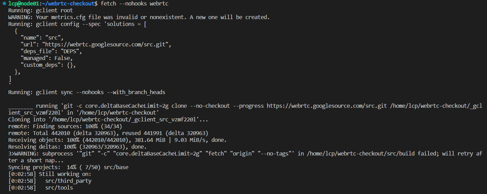
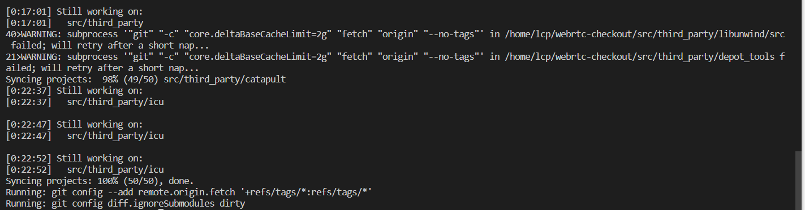
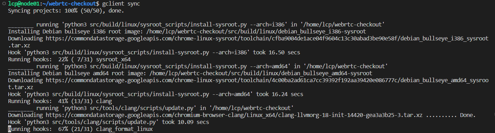
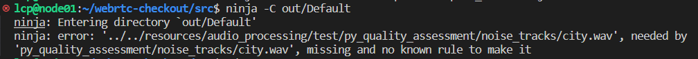
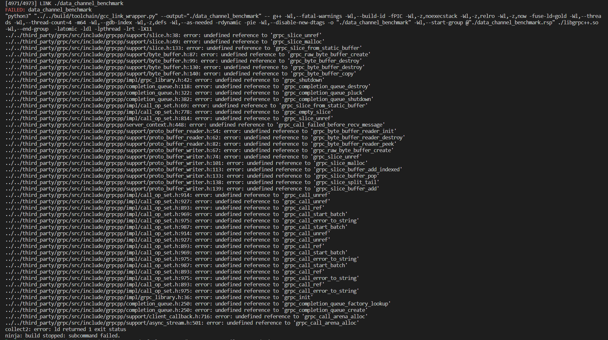

环境说明
所用系统环境为Ubuntu 22.04.3 LTS x86_64，6.2.0-34-generic，非管理员账户
下载源码
编译过程在用户根目录进行
安装depot tools
1 | git clone https://chromium.googlesource.com/chromium/tools/depot_tools.git |
获取源码
1 | mkdir webrtc-checkout |
在fetch --nohooks webrtc的时候报错/home/lcp/depot_tools/vpython3: line 52: /home/lcp/depot_tools/.cipd_bin/vpython3: No such file or directory，代理有问题。根据实际情况设置代理：
1 | export http_proxy=socks5://10.8.14.179:7890 |
执行fetch --nohooks webrtc输出部分如下：

fetch --nohooks webrtc最终结果如下：

接下来进行gclient sync代码同步，但是会出现各种报错，比如To use a proxy in this situation, please supply those settingsin a .boto，原因是gclient不会自动去找到代理端口和地址，要增加.boto文件，其它报错大概率也是代理的问题。
这里在webrtc-checkout文件夹下创建.boto，添加如下内容
1 | [Boto] |
在.bashrc添加
1 | export NO_AUTH_BOTO_CONFIG=/home/lcp/webrtc-checkout/.boto |
最后执行gclient sync，显示输出如下：

重新多次执行gclient sync，确保效果，最终输出如下：
1 | lcp@node01:~/webrtc-checkout$ gclient sync |
安装依赖
1 | cd src |
碰到了管理员问题，普通用户不能sudo装包，在管理员账户中，执行命令sudo visudo，然后添加lcp ALL=(ALL) ALL，ctrl+o保存，回车确认，ctrl+x退出，然后重新执行上边的命令即可
本地分支
1 | cd src |
创建本地分支localRTC，git branch查看当前分支，git switch localRTC切换到新分支
更新本地分支
1 | git checkout master |
切换到master分支，从仓库拉最新的代码跟新本地的master分支代码，gclient sync同步项目中的所有相关仓库，确保所有代码库都是最新状态，切换到本地分支localRTC，然后把master分支的更改合并到本地的localRTC分支。
生成Ninja工程文件
WebRTC默认使用Ninja作为编译系统，Ninja工程文件通过GN生成。
使用如下命令生成默认配置工程（Debug编译，工程文件位于out\Default目录下）：
1 | gn gen out/Default |
如果需要Release编译，通过如下命令生成工程文件：
1 | gn gen out/Default --args='is_debug=false' |
如果想用vscode单步调试，可以用以下命令：
1 | gn gen out/Default --args='is_debug=true rtc_include_tests=false treat_warnings_as_errors=false use_rtti=true is_component_build=false enable_iterator_debugging=false is_clang=false use_sysroot=false use_custom_libcxx=false use_custom_libcxx_for_host=false target_os="linux" target_cpu="x64"' |
如果想清理，可以使用下边的命令：1
ninja -C out/Default -t clean
编译
1 | ninja -C out/Default -t compdb cxx cc > compile_commands.json |
-t compdb cxx cc > compile_commands.json是用来生成compile_commands.json进行语法高亮跳转的。
编译报错如下：

原因是WebRTC源代码下载不完整，需要执行gclient sync重新下载，再执行上边的命令。
接着重新按照安装依赖、生成ninja工程文件、编译的流程走就可以了。Intel Xeon Platinum 8383C (160) @ 3.600GHz跑满，编译时长大概1分钟。
想在vscode进行单步调试，报错如下：

date_channel_benchmark报错，在third_party中有grpc的源码，目前不知道怎么解决，参考zhuxian2009的博客，暂时不编译，解决方法如下：
将src/webrtc.gni进行如下修改
1 | #rtc_enable_grpc = rtc_enable_protobuf && (is_linux || is_mac) |
参考
WebRTC编译
Linux平台WebRTC编译
使gclient 报错 To use a proxy in this situation, please supply those settingsin a .boto
ubuntu编译webrtc并且搭建调试环境